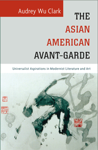

<body bgcolor="#FFFFFF" text="#000000" link="#0000FF" vlink="#CC0000" alink="#CC0000"><center><hr width="350" size="1" align="center" noshade>Examining early Asian American writers and artists as modernists<hr width="350" size="1" align="center" noshade><p><a href="https://cdcshoppingcart.uchicago.edu/Cart/ChicagoBook.aspx?ISBN=9781439912263&&PRESS=temple" target="_top">Buy this book!</a> | <a href="https://cdcshoppingcart.uchicago.edu/Cart/Cart.aspx?PRESS=temple" target="_top">View Cart</a> | <a href="https://cdcshoppingcart.uchicago.edu/Cart/Cart.aspx?PRESS=temple" target="_top">Check Out</a></p><p></p></center><!--none//--><h1>The Asian American Avant-Garde</h1>
<H2>Universalist Aspirations in Modernist Literature and Art</H2>
<h3>Audrey Wu Clark</h3>
<P>cloth 1-4399-1226-2 $84.50, Aug 15, <FONT COLOR=#990033>Available</FONT>
<br>paper 1-4399-1227-0 $27.95, Aug 15, <FONT COLOR=#990033>Available</FONT>
<br>Electronic Book 1-4399-1228-9 $27.95 <FONT COLOR=#990033>Available</FONT>
<BR> 246 pp
6 x 9
10&nbsp;figures
</P><BLOCKQUOTE><I>"</i>The Asian American Avant-Garde<i> makes an important and original contribution to literary study. Clark focuses on the literary works of Filipino, Japanese, Chinese, and Korean authors working and living in the United States before 1965, a time when </i>de facto<i> and </i>de jure<i> discrimination against Asians was a firmly established feature of the social order and when there was as yet no panethnic movement of racial mobilization. Clark argues that to understand the aesthetic project all of these authors were engaged in, we need to understand how this aesthetic project was intensely informed by Anglo-American modernism and its rhetoric of cosmopolitanism, a claim whose significance has not been as fully explored as it is in this rich and complex book. </i>The Asian American Avant-Garde<i> promises to enliven debate both within Asian American and modernist literary circles."</i><br>&#151<b>Min Hyoung Song</b>, Boston College and author of <i>The Children of 1965: On Writing, and Not Writing, as an Asian American </i></I></BLOCKQUOTE>
<p><i>The Asian American Avant-Garde</i> is the first book-length study that conceptualizes a long-neglected canon of early Asian American literature and art. Audrey Wu Clark traces a genealogy of these writers and artists of Asian descent who strategically performed counter-universalism in short fiction, poetry, novels, and art in the United States, between the years 1882 and 1945. Responding to their contemporary period of Asian exclusion, they challenged the empirical failures of American democracy to envision a genuine, egalitarian universalism that still has yet to come.
<p>Believing in the promise of an inclusive America, these avant-gardists critiqued racism as well as institutionalized art. Clark examines racial outsiders including Isamu Noguchi, Dong Kingman and Yun Gee to show how they engaged with modernist ideas, particularly cubism. She draws comparisons between writers such as Sui Sin Far and Carlos Bulosan with modernist luminaries like Stein, Eliot, Pound, and Proust.
<p>Acknowledging the anachronism of the term �Asian American� with respect to these avant-gardists, Clark attempts to reconstruct it. <i>The Asian American Avant-Garde</i> explores the ways in which these artists and writers responded to their racialization and the Orientalism that took place in modernist writing.
<BR>&nbsp;<h2>Excerpt</h2><P>Excerpt available at <a href="http://www.temple.edu/tempress">www.temple.edu/tempress</a></p>
<BR>&nbsp;<h2>Reviews</h2>
<p><i>"</i>The Asian American Avant-Garde<i> offers a new paradigm for conceptualizing early Asian American literature. Clark rightly makes the case that our current paradigms do not make sense for texts created during the Exclusion Era, a period when the panethnic idea of �Asian American� did not exist. She is particularly good at explaining how writers of this period appropriate and transform work done by other more established authors like Whitman and Eliot, and how they critique and adapt existing ideologies like suffragism, Buddhism, and Marxism. Clark also provides insights about how gender intersects with race in many of these writers� attempts to articulate a universalist sensibility."</i><br>&#151<b>Floyd Cheung</b>, Associate Professor of English Language and Literature, and of American Studies at Smith College, and the co-editor of <i>Recovered Legacies: Authority and Identity in Early Asian American Literature</i> (Temple)
<p><i>"In this admirable...volume, Clark explores the construction of Asian-American identity by Asian-American writers in the context of modernism; her subjects wrote during a period (1882�1945) notable both for fascination with 'the Orient' and intense, often institutionalized, anti-Asian racial prejudice. She studies an eclectic, intriguing group of writers.... Their works are likely to be lesser known or unknown to many readers, and afford Clark the chance to wrestle with issues of race, gender, class, and politics.... [T]he subject is a fascinating one."</i><br>&#151<i><b>Publishers Weekly</i></b>
<p><i>"</i>The Asian American Avant-Garde<i> effects a significant return to a neglected political conception at the heart of minority aesthetic expression.... Clark is clearing the ground for a renewed attention to the politics and aesthetic philosophy of Asian American artists properly identified as modernist, and the very fact of this important�and rigorously historicized�gesture makes this study necessary and relevant.... Much is achieved by Clark�s analysis of gender politics, and her readings are especially detailed and rigorous through this lens, which measures and focuses the universalist politics she engages."</i><br>&#151<b><i>MELUS</i></b>
<BR>&nbsp;<h2>Contents</h2><P>
<p>Acknowledgments
<br>
<br>Introduction: Toward an Asian American Modernism
<br>1. Chinatown as Universal Region in Sui Sin Far�s <i>Mrs. Spring Fragrance</i>
<br>2. �Little Postage Stamps of Native Soil�: The Modernist Haiku during Japanese Exclusion
<br>3. Renewing America in Dhan Gopal Mukerji�s <i>Caste and Outcast</i> and Younghill Kang�s <i>East Goes West</i>
<br>4. Popular Front Politics and Nonlinear Temporality in Carlos Bulosan�s <i>America Is in the Heart</i>
<br>Conclusion: Asian American Universalism and the Radicalism of Performing �Assimilation� during Asian Exclusion
<br>
<br>Notes
<br>Works Cited
<br>Index
</P><BR>&nbsp;<H2>About the Author(s)</H2>
<P><b>Audrey Wu Clark</b> is an Assistant Professor of English at the United States Naval Academy.</P>
<BR><H2>Subject Categories</H2>
<p><A HREF="/tempress/asian_amer.html" TARGET="_top">Asian American Studies</a>
<BR><A HREF="/tempress/literature.html" TARGET="_top">Literature and Drama</a>
<BR><A HREF="/tempress/cultural.html" TARGET="_top">Cultural Studies</a>
</p>
<BR><h2 class="inpageheading">In the series</H2>
<P><I><a href="http://www.temple.edu/tempress/asam_history.html" onMouseOver="window.status='Click for other books in this series!'; return true;" onMouseOut="window.status=''; return true;" target="_top">Asian American History and Culture</a></i>, edited by K. Scott Wong, Linda Trinh V�, and Cathy Schlund-Vials.
</p><p>Founded by Sucheng Chan in 1991, the <I>Asian American History and Culture</I>, series has sponsored innovative scholarship that has redefined, expanded, and advanced the field of Asian American studies while strengthening its links to related areas of scholarly inquiry and engaged critique. Like the field from which it emerged, the series remains rooted in the social sciences and humanities, encompassing multiple regions, formations, communities, and identities. Extending the vision of founding editor Sucheng Chan and emeriti editor Michael Omi and David Palumbo-Liu, series editors K. Scott Wong, Linda Trinh V�, and Cathy Schlund-Vials continue to develop a foundational collection that embodies a range of theoretical and methodological approaches to Asian American studies.</p>
<p align="center"><a href="https://cdcshoppingcart.uchicago.edu/Cart/ChicagoBook.aspx?ISBN=9781439912263&&PRESS=temple" target="_top">Buy this book!</a> | <a href="https://cdcshoppingcart.uchicago.edu/Cart/Cart.aspx?PRESS=temple" target="_top">View Cart</a> | <a href="https://cdcshoppingcart.uchicago.edu/Cart/Cart.aspx?PRESS=temple" target="_top">Check Out</a></p><p><font face="Arial" size="1"><a href="copyright.html" onMouseOver="window.status='Web Copyright Policy';return true;" onMouseOut="window.status=''" title="Web Copyright Policy">&copy;</a> 2016 <a href="http://www.temple.edu" target="new" onMouseOver="window.status='Link to Temple University home page';return true;" onMouseOut="window.status=''" title="Link to Temple University home page">Temple University</a>. All Rights Reserved. http://www.temple.edu/tempress/titles/2353_reg.html</font></p>